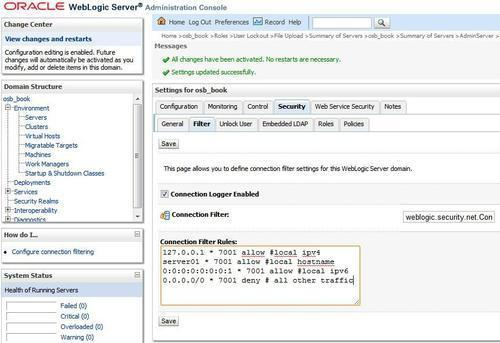

In this recipe, we will actually discuss a WebLogic feature that is called network connection filters. These filters are a sort of firewall feature that can be used to allow or deny access to the server for certain protocols and addresses. A typical use is to restrict access to the Administrator port to prevent unauthorized access.
We will configure WebLogic to use a network connection filter. In this filter, we will only allow certain addresses and protocols to have access to the Administrator console and the services.
In WebLogic console, perform the following steps:
weblogic.security.net.ConnectionFilterImpl into the Connection Filter field.127.0.0.1 * 7001 allow #local ipv4
server01 * 7001 allow #local hostname
0:0:0:0:0:0:0:1 * 7001 allow #local ipv6
0.0.0.0/0 * 7001 deny #all other traffic

We implemented the WebLogic filter implementation class that is provided as part of the WebLogic Server product. By default, it accepts all incoming connections. Therefore we configured the filter rules to allow or deny certain traffic to the Admin Server. Filter rules are evaluated in the order they are written. The first rule to match determines how the connection is treated. If no rules match, the connection is permitted.
In our case, the last rule is a deny rule which locks down all traffic to the 7001 Administrator port except for connections allowed by one of the preceding rules. As a result of the connection filter rules, the Admin Server is now only available from the server itself.
Filter rules have a syntax of:
targetAddress localAddress localPort action protocols
targetAddress: specifies the address to filter.localAddress: defines the host address of the WebLogic server (* matches all local addresses).localPort: defines the port of the WebLogic server (* matches all ports).action: specifies the type of rule and may contain allow or deny.protocols: contains a list of protocols to match (http, https, t3, t3s, giop, giops, dcom, ftp, ldap). When no protocol is defined, all protocols will match the rule.By implementing the filter implementation class, we needed to restart the WebLogic servers. However, changing the filter rules does not require a restart but will be instantly active.
Filters apply to all servers in your WebLogic domain, so not just the Admin Server but also all Managed Servers.
In this recipe, we locked down port 7001 and only allowed access to the Admin Server from local addresses. If we want to filter on a subnet to only allow access to the OSB Managed Server for given subnet, the following configuration can be used:
10.20.30.0/24 10.20.30.2 8011 allow http #osb services 0.0.0.0/0 * 8011 deny #osb services
The OSB server runs on 10.20.30.2:8011 and the allowed subnet is from 10.20.30.1 to 10.20.30.254.
When unauthorized access occurs on the server, the following line will appear in the log file of the specific server:
<datetime> <Notice> <Socket> <BEA-000445> <Connection rejected, filter blocked Socket[addr=10.50.30.203,port=54144,localport=7001], weblogic.security.net.FilterException: [Security:090220]rule 4>
In this example, the external address 10.50.30.203 did not match any of the first three filter rules and therefore is denied access by the fourth filter rule.